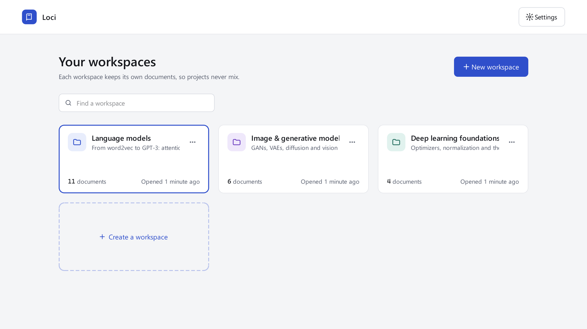
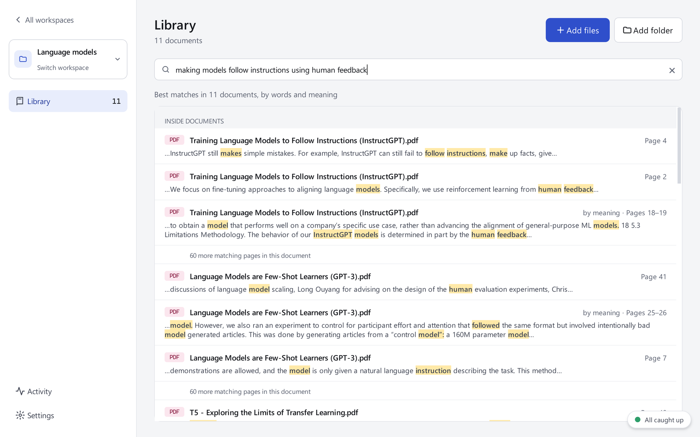
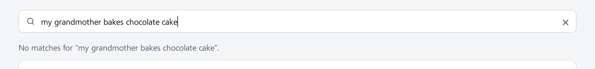
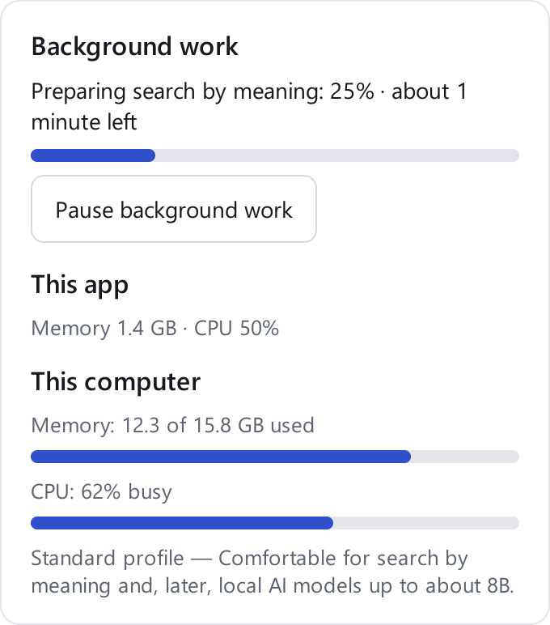

A private knowledge bank
Your knowledge, kept in its place.
A desktop app that turns everything you read (papers, books, lecture notes) into a library you can search by words or by meaning, with every result pointing to its page. It runs entirely on your own computer.
Why we are building it
Students and researchers live in documents: papers, textbooks, lecture notes, past exams. The tools around them were not built for collections that keep growing.
"I know I read it somewhere."
Search inside one PDF at a time, or re-read whole chapters to find a passage you saw last week.
"I uploaded the same papers again."
Online AI tools forget everything between sessions, and every upload means handing your documents to someone else's server.
"Where did that answer come from?"
AI answers sound confident, but checking them against the source means hunting for it yourself.
The idea: a knowledge bank that stays with you
How it works
The name comes from the method of loci, the memory palace: you remember things by the place you keep them. In Loci each subject, project or book gets its own workspace, and every result leads back to its page.
STEP 1
One per course, research project or book, so collections never mix. The same file can live in several.
AvailableSTEP 2
Drop in files or whole folders: PDF, text, Markdown. Duplicates are spotted, and small files come first.
AvailableSTEP 3
Text is extracted page by page and indexed in the background. Word search works within seconds.
AvailableSTEP 4
Search by words or meaning today; ask questions and get cited answers next.
Ask: next
The home screen: one workspace per subject. Real screenshot, version 0.3, with 21 machine-learning papers.
Find anything Available now

"making models follow instructions using human feedback": the InstructGPT paper first, with matching passages and their pages. Real screenshot, version 0.3.
Exact terms, names and formulas, with word forms matched (learn finds learning). Matches are highlighted.
Describe an idea in your own words. A small model running on your computer finds passages that say it differently.
The two rankings are merged: the precision of words and the reach of meaning in one list.
Every result names its page. One click opens the document there.
A page must actually support your search to be shown. If nothing does, Loci says so.
Searches answer in under a tenth of a second, even across hundreds of documents.

Unrelated text finds nothing. Loci never pads results with guesses.
Built for ordinary laptops Available now
Loci is designed for the laptops students and researchers already own (8 to 16 GB of memory) and stays responsive while it works.

The status panel, always one click away.
Documents are word-searchable within seconds of import. Search by meaning is prepared in the background, with the time left shown.
Loci detects how much memory you have and picks lighter or stronger local models to match.
Pause and resume at any time. Loci pauses on its own when memory runs low, and continues where it stopped after a restart.
The only download is a 90 MB search model, once. After that, nothing leaves your computer.
87%
of test questions found the right paper in the top 5 results
0.14 s
to read a typical PDF (median)
<0.1 s
for a search across all documents
~30 min
to prepare search by meaning for 358 papers, in the background
Measured on 358 openly licensed arXiv papers (9,972 pages) with 45 test questions, on a 16 GB laptop without a graphics card.
Ask your documents Coming in v0.4
The Ask section will answer questions using only your documents. Each claim is checked against the passage it came from and cited to a page you can open. When your documents don't contain the answer, Loci will say so instead of guessing.
Design preview · not in the current versionHow does LoRA make fine-tuning large models cheaper?
LoRA keeps the pre-trained weights frozen and trains only a pair of small low-rank matrices added to each layer LoRA · p. 1. Because the number of trainable parameters drops sharply, fine-tuning needs far less GPU memory, and each task only has to store the small matrices LoRA · p. 2. Unlike adapter layers, the matrices can be merged into the weights after training, so answers are not slower to produce LoRA · p. 4.
Every sentence checked against its source passage
Which GPU did the authors use?
The documents in this workspace don't say which GPU the LoRA authors used, so Loci can't answer that from them. The closest passage describes the memory saved during training LoRA · p. 1.
The AI writes from the passages Loci found, not from what it half-remembers.
Each claim is verified against its passage before you see it. Click a citation to open the page.
The AI model runs on your computer, sized to its memory. Nothing is sent online.
Everything Loci will do
Every user gets the same core. Specialized tools come as optional extensions, the way code editors work, so a chemistry student and a historian each install only what helps them.
| Feature | What it does | Status |
|---|---|---|
| Organize and find | ||
| Workspaces | Separate collections per subject or project | Now |
| Import files and folders | PDF, text and Markdown; duplicates detected; progress and time left | Now |
| Search by words and meaning | Combined ranking, highlighted passages, page numbers | Now |
| Open at page | Jump from any result to its page in your PDF viewer | Now |
| Background status | Time left, computer load, pause, automatic low-memory pause | Now |
| Understand | ||
| Ask with citations | Answers from your documents, checked and cited to pages | v0.4 |
| Conversation memory | Each workspace remembers past questions; memory you can see and edit | v0.4 |
| Summaries | A short overview of each document, and summaries on request | v0.5 |
| Study and analyze | ||
| Flashcards and quizzes | Generated from your material, with links back to the source | v0.6 |
| Exam-paper analysis | Question patterns, topics and difficulty across past papers; practice papers in the same pattern | v0.6 |
| Knowledge packs | Installable offline knowledge such as dictionaries and reference data | v0.7 |
| Suggestions | Related documents, recurring topics, "compare these papers?" | v0.8 |
| Extensions | ||
| More formats | Scanned PDFs (text recognition), Word, PowerPoint, EPUB | Planned |
| Subject tools | Mathematics, chemistry, engineering: formulas, tables, calculators the AI can use | Planned |
| Styled outputs | Designed flashcards, formatted summaries and reports | Planned |
What we stand for
Your documents and the AI stay on your computer. No accounts, no uploads.
Results and answers point to the page they came from, so you can always check.
Fast on 8 to 16 GB laptops; it adapts to the computer instead of demanding a better one.
Development pauses at planned demo gates so people outside the team can try it before we go further.
Roadmap
Now
Version 0.3 is with testers. We are watching how people import, organize and search, and fixing what confuses them.
Next
Version 0.4 adds Ask: answers from your documents, checked and cited, from a local AI model chosen by benchmark.
After
A polished prototype, then study tools, exam-paper analysis, knowledge packs and optional extensions.
Version 0.3 is open for testing on Windows 10 and 11. Download the zip, extract it and double-click Loci.exe. No installation or Python needed.
github.com/AzureSky0/Local-Research-Assistant-and-Study-Buddy-Hybrid/releases
Loci is developed in the open as a learning project. The code, the roadmap and the decisions behind it are on GitHub. Feedback and testers are welcome.
github.com/AzureSky0/Local-Research-Assistant-and-Study-Buddy-Hybrid
Loci is a working name; the final name will be chosen before the public release. Screenshots show version 0.3; the Ask page is a design preview of version 0.4.